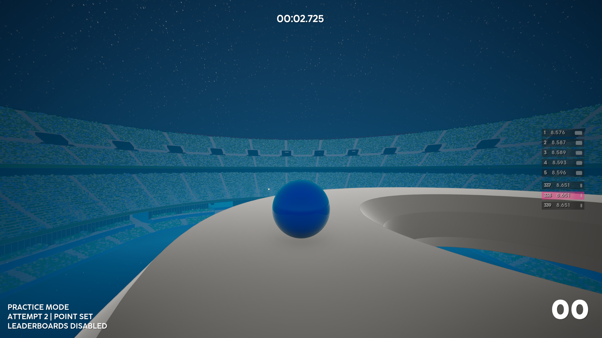

set your point
Move anywhere and save that exact position as your practice start.

Set a practice point anywhere, restart back to it instantly, and repeat the part you actually want to learn.
Move anywhere and save that exact position as your practice start.
Normal restart and death return to the point with the timer reset.
Full restart still returns to the original track start.
Practice runs are voided and cannot submit leaderboard scores.
The recommended installer detects Ballest and installs Practice Mode. If UE4SS is missing, the compatible build is installed automatically. UE4SS runs quietly in the background with its debug windows hidden on launch.
No separate UE4SS download is needed.
The installer automatically looks for your Steam copy of Ballest. If needed, you can browse to the Win64 folder.
UE4SS is added only if it is not already installed. Practice Mode is installed and enabled, and UE4SS debug windows are hidden on launch. Ctrl+O still opens the UE4SS GUI for troubleshooting.
Open Mods on the main menu and enable Practice Mode.
Use the installer for the easiest setup. The manual ZIP is available for existing UE4SS setups, and the standalone uninstaller removes only Practice Mode.
Not affiliated with or endorsed by the developers of Ballest of Them All. The installer bundles UE4SS under its MIT license.